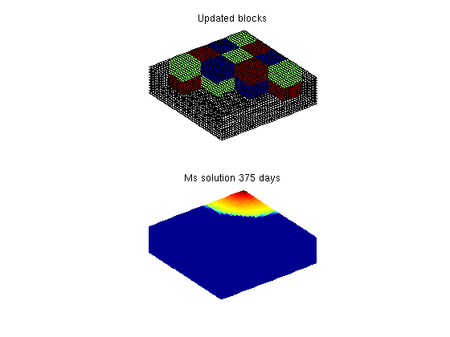

Contents
Multiscale Pressure Solver: Dynamic update of basis functions
Consider a two-phase oil-water problem. Solve the two-phase pressure equation
where v is the Darcy velocity (total velocity) and lambda is the mobility, which depends on the water saturation S.
The saturation equation (conservation of the water phase) is given as:
where phi is the rock porosity, f is the Buckley-Leverett fractional flow function, and q_w is the water source term.
As the transport solution advances we update the basis functions if the mobility changes more than a given tolerance. After the simulation is done we compare the fine scale and coarse scale saturation profiles.
require coarsegrid
Define and visualize the model
We construct the Cartesian grid, set the permeability to 100 mD, and use the default single-phase fluid with unit viscosity
cellDims = [40, 40, 10]; verbose = mrstVerbose; G = cartGrid(cellDims, cellDims); G = computeGeometry(G); rock.perm = repmat(100*milli*darcy, [G.cells.num, 1]); rock.poro = 0.3*ones(G.cells.num,1); fluid = initCoreyFluid('mu' , [ 1, 10]*centi*poise , ... 'rho', [1000, 700]*kilogram/meter^3, ... 'n' , [ 2, 2], ... 'sr', [0.2, 0.2], ... 'kwm', [1 1]); % Set two wells, one vertical and one horizontal W = struct([]); W = verticalWell(W, G, rock, 40, 40, 1:10, ... 'Type', 'rate', 'Val', 1*meter^3/day, ... 'Radius', .1, 'Name', 'I'); W = addWell(W, G, rock, 1:40, 'Type','bhp', ... 'Val', 0, 'Radius', .1, 'Dir', 'x', 'Name', 'P'); % Visualize the model figure; plotGrid(G, 'FaceColor', 'none', 'EdgeColor', [0.65, 0.65, 0.65]); plotWell(G, W, 'radius', 0.1, 'color', 'r'); view(3); axis equal tight off
Set up solution structures
Here we need four solution structures, two for each simulator to hold the solutions on the grid and in the wells, respectively.
xRef = initState(G, W, 0); xMs = initState(G, W, 0);
Partition the grid
We partition the fine grid into a regular 5-by-5-by-2 coarse grid in index space so that each coarse block holds 8-by-8-by-5 fine cells. The resulting vector p has one entry per fine-grid cell giving the index of the corresponding coarse block. After the grid is partitioned in index space, we postprocess it to make sure that all blocks consist of a connected set of fine cells. This step is superfluous for Cartesian grids, but is required for grids that are only logically Cartesian (e.g., corner-point and other mapped grids that may contain inactive or degenerate cells).
p = partitionUI(G, [5, 5, 2]); p = processPartition (G, p, 'Verbose', verbose); figure; plotCellData(G,mod(p,2)); view(3); axis equal tight off CG = generateCoarseGrid(G, p, 'Verbose', verbose); S = computeMimeticIP(G, rock, 'Verbose', verbose); mu = fluid.properties(xMs); totmob = @(s) (sum(bsxfun(@rdivide, fluid.relperm(s), mu),2)); mob = totmob(xMs.s); CS = generateCoarseSystem (G, rock, S, CG, mob, ... 'Verbose', verbose); W = generateCoarseWellSystem(G, S, CG, CS, ones([G.cells.num, 1]), rock, W); xRef = solveIncompFlow (xRef, G, S, fluid, 'wells', W); xMs = solveIncompFlowMS(xMs, G, CG, p, S, CS, fluid, 'wells', W);

Report initial state of reservoir
subplot(2,1,1), cla plotCellData(G, convertTo(xRef.pressure(1:G.cells.num), barsa)); title('Initial pressure fine'), view(3) subplot(2,1,2), cla plotCellData(G, convertTo(xRef.pressure(1:G.cells.num), barsa)); title('Initial pressure MS'), view(3) dp = @(x) num2str(convertTo(x(1).pressure, barsa)); disp(['DeltaP - Fine: ', dp(xRef.wellSol)]); disp(['DeltaP - Ms: ', dp(xMs .wellSol)]);
DeltaP - Fine: 3.7478 DeltaP - Ms: 3.7875
Transport loop
We solve the two-phase system using a sequential splitting in which the pressure and fluxes are computed by solving the flow equation and then held fixed as the saturation is advanced according to the transport equation. This procedure is repeated for a given number of time steps (here we use 15 equally spaced time steps). The error introduced by this splitting of flow and transport can be reduced by iterating each time step until e.g., the residual is below a certain user-prescribed threshold (this is not done herein).
T = 500*day(); dT = T/20; dTplot = 100*day(); % plot only every 100th day N = fix(T/dTplot); pv = poreVolume(G,rock); t = 0; plotNo = 1; hi = 'Ms solution '; he = 'Updated blocks'; e = []; pi = []; pe = []; while t < T,
mobOld = mob; xRef = explicitTransport(xRef , G, dT, rock, fluid, 'wells', W); xMs = explicitTransport(xMs , G, dT, rock, fluid, 'wells', W); % Check for inconsistent saturations s = [xRef.s(:,1); xMs.s(:,1)]; assert(max(s) < 1+eps && min(s) > -eps); % Update solution of pressure equation. xRef = solveIncompFlow (xRef, G, S, fluid, 'wells', W); xMs = solveIncompFlowMS(xMs , G, CG, p, S, CS, fluid, 'wells', W); %%%%%%%%%%%%%%%%%%%%%%%%%%%%%%%%%%%%%%%%%%%%%%%%%%%%%%%%%%%%%%%%%%%%%%%%
Check if we need to update basis functions
mob = totmob(xMs.s); [CS, faces] = updateBasisFunc(S, CS, G, CG, rock, mob, 'mobOld', mobOld, ... 'mobTol', 0); % find which blocks have been updated (use for ploting) updateBlocks = unique(reshape(CG.faces.neighbors(faces, :), [], 1)); updateBlocks = updateBlocks(updateBlocks>0); fineCells = ismember(CG.partition, updateBlocks); % Measure water saturation in production cells in saturation e = [e; sum(abs(xRef.s(:,1) - xMs.s(:,1)).*pv)/sum(pv)]; %#ok pe = [pe; xRef.s(W(2).cells,1)' ]; %#ok pi = [pi; xMs.s(W(2).cells,1)']; %#ok % Increase time and continue if we do not want to plot saturations t = t + dT; % Plot updated blocks and saturation of multiscale heading = [num2str(convertTo(t,day)), ' days']; subplot(2, 1, 1), cla %plotCellData(G, xRef.s(:,1)) plotGrid(G, 'faceColor', 'none'); plotCellData(G, mod(CG.partition(fineCells), 3), find(fineCells));% view(3) view(3), axis equal off, title([he]) subplot(2, 1, 2), cla plotCellData(G, xMs.s(:,1)); view(3), axis equal off, title([hi heading]) drawnow %plotNo = plotNo+1;
end
Compare multiscale saturation against fine scale
plot output
f = figure; subplot(2,1,1) plotCellData(G, xRef.s(:,1)); title('Saturation Fine') view(3), camproj perspective, axis tight equal, camlight headlight caxis([0 1]); colorbar subplot(2,1,2) plotCellData(G, xMs.s(:,1)); title('Saturation Coarse') view(3), camproj perspective, axis tight equal, camlight headlight caxis([0 1]); colorbar